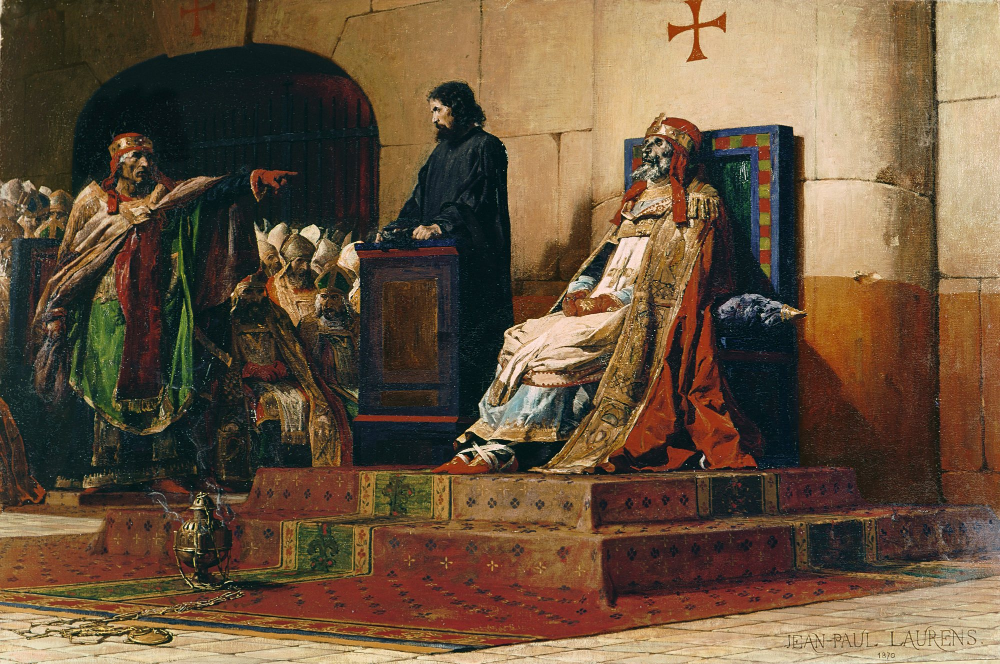
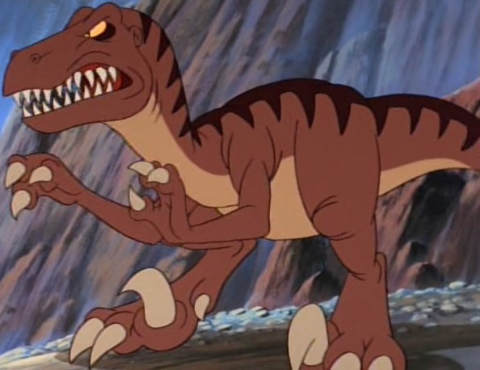
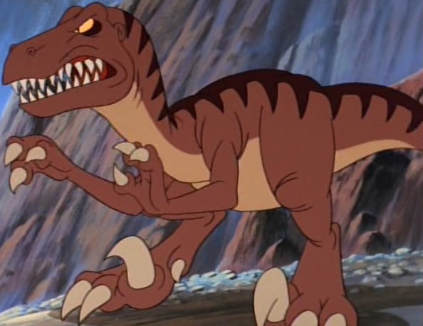

A dead pope was put on trial

Due to popular movies such as Jurassic Parka and The Land Before Time, many of the general public have a perceived notion of what a velociraptor would look like.
 

But according to new scientific research, velociraptors had feathers and are related by ancestry to chickens.